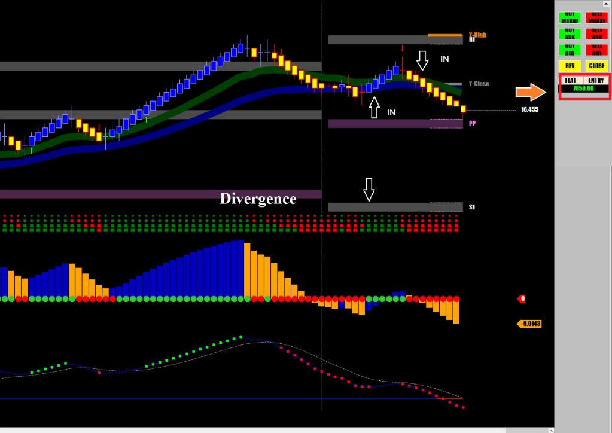

해외선물 - [SI] 초보도 수익을 낼 수 있는 쉬운 선물
오늘은 매매를 너무 늦게 시작해서 긴 추세 꼭지에서 역매매로 조금 벌었고
증시가 오후막판에 떡락할것을 예상해 오후까지 기다렸는데 예상대로 증시가 폭락하는 와중에
실버에서도 다시 한번 좋은 수익이 났음
지금 오후 3시에 장외마켓이 개장한 후 두 번 매매로 갠춘한 수익을 올렸음
오늘 일당 달성.
오늘 전체 수익은 $7,050

실버처럼 움직임이 크지 않은 선물을 매매할 때는 물량을 크게해서(최소 5 계약) 짧게 먹고 나오는 매매를 해야 한다.
반면에 크루드, 다우, DAX, FX 처럼 움직임이 큰 선물은 손절을 넓게 잡아야 하므로 적은 계약으로 들어가서 크게 먹고 나와야 한다.
문제는 크루드나 인덱스 선물, FX는 돈벌기가 매우 어렵다.
실버선물은 움직임이 둔하고 정직하며 매우 천천히 움직이는 선물이고 일단 방향을 잡으면 한쪽으로 어느 정도는 진행을 해주기 때문에 초보 트레이더들도 수익을 낼 수 있는 쉬운 선물이다.
물론 어느 선물이든지 방향없이 오락가락 하는 구간이 있기 마련이기 때문에 실버도 그런 국면에 걸리면 손실이 날 수 있지만 그런 구간이 자주 발생하지 않아서 승률이 높다.
자기에게 맞는 선물을 고르고, 모의매매 해보고, 승률이 70% 이상 나올때쯤 실전매매에 들어가는게 좋다.
실버같이 쉬운 선물에서도 수익을 못내면 일단 아직 선물매매하기에 실력이 많이 부족한 상태인걸 인지하고 훈련을 더 해야한다.